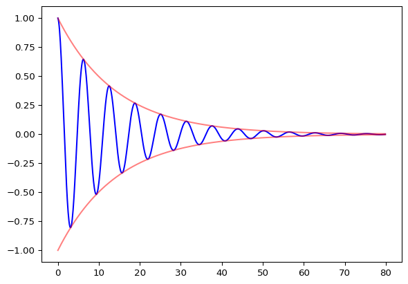
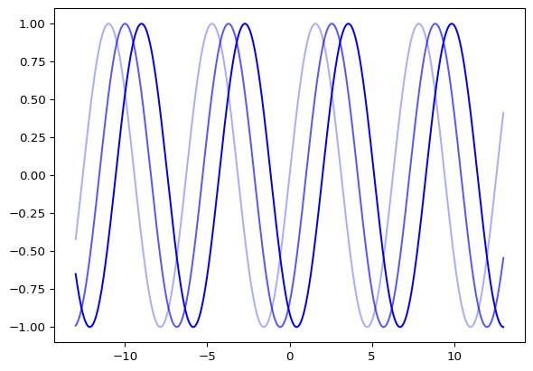
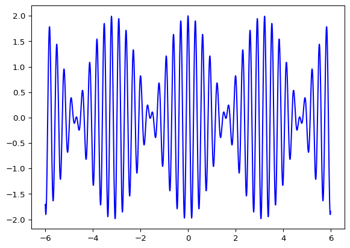

Vibrations & Waves
Circular Motion:
Using polar coordinates is simpler for circular motion, so the following are some important kinematic definitions in polar coordinates and periodic motion.
Angular Displacement \(\bar\theta = \bar\theta_f - \bar\theta_i\), measured in \(rad\).
Angular Velocity \(\bar\omega = \frac{d\bar\theta}{dt}\), measured in \(rad/s\).
Angular Acceleration \(\bar\alpha = \frac{d\bar\omega}{dt}\), measured in \(rad/s^2\).
Frequency \((f) = \frac{no. \: of \: turns}{\Delta t}\)
Periodic time \((T) = \frac{2\pi}{\omega}= \frac{1}f\)
Simple Harmonic Motion:
For a body attached to a spring which exerts a force \(F = -kx\) the equation of motion is: \[ m \ddot{x} = -kx \] once this differential equation is solved, the result will be able to describe the motion of the system.
\[x = A \cos(\omega t + \phi) \] where \(A\) is the amplitude and \(\phi\) is the phase at \(t = 0\).
Forced Occillations:
A spring system that is affected by an external force \(F = F_0 \cos(\Omega t)\) and a damping force \(F_D = -rv\) will be described by the following equation of motion.
\[ m\ddot{x} + k_s x + b\dot{x} = F_0 \cos(\Omega t) \]
solving this differential equation we get
\(x = A \cos(\Omega t - \phi)\), where \(A(\Omega) = \frac{F_0}{m\sqrt{(\omega_0^2 - \Omega^2)^2 + (2\gamma \Omega)^2}}\) and \(\phi = \tan^{-1}( \frac{2\gamma \Omega}{\omega_0^2 - \Omega^2})\).
the frequency of applied force that will result in the greatest amplitude is \(\Omega_A = \sqrt{\omega_0^2 -2\gamma^2}\) and that maximum amplitude is \(A = \frac{F_0}{r \sqrt{\omega_0^2 -\gamma^2}}\).
if we want the spring to oscillate at maximum velocity however, then \(\Omega = \omega_0\), the amplitude \(A = \frac{F_0}{r\omega_0}\), and \(v_{max} = \frac{F_0}b\).
Waves:
Waves can be classified based on three criteria, firstly:
Mechanical Waves: need a medium to propagate.
Electromagnetic Waves: doesn’t need a medium.
secondly:
Transverse: the vibration is perpendicular to wave propagation.
Longitudinal: the vibration is parallel to wave propagation.
and lastly, Travelling and Standing Waves.
Wave equation
The function of a wave moving in a line is \(y = f(kx-\omega t)\), from this we can find the differential equation for wave motion.
\[ \frac{\partial^2 y}{\partial x^2} = \frac{1}{v^2} \frac{\partial^2 y}{\partial t^2} \]
A case of such wave equation is \(y(x,t) = \frac{A}{(x - vt)^2 + 1}\), which describes a pulse moving through a medium such as a rope for example.
We can see from the equation that as time passes (as \(t\) increases) the curve will shift to the right, simulating the propagation of the wave.
However, we’re mainly concerned with sinusoidal waves which behave according to this equation.
\[ y(x,t) = A \cos(kx-\omega t) = A \cos(k(x-vt)) \]
where \(\omega = \frac{2\pi}T\) and \(k = \frac{2\pi}\lambda\).

Similarly to the pulse, as \(t\) increases the wave propagates to the right.
Sound Waves:
this section will discuss multiple topics regarding sound waves.
Sound Wave Intensity
Given a source of spherical waves operating at a power output \(P\).
Intensity: \(I = \frac{P}A = \frac{P}{4 \pi r^2}\)
Since sound waves are mechanical, longitudinal, and spherical waves; this equation applies to them; however, the human perception of sound is logarithmic.
Sound Intensity: \(\beta = 10 \log(\frac{I}{I_0})\), where \(I_0 = 10^{-12}\) and \(\beta\) is measured in decibel \((dB)\).
Beats
When two waves with slightly different frequencies interfere, the difference between their phases continuously changes making them shift back and forth between constructive and destructive interference, so they produce a wave with periodically variable amplitude called a Beat.
mathematically this can be represented by adding the two waves \(D_1 (x,t) = A \cos(\omega_1 t - kx)\) and \(D_2 (x,t) = A \cos(\omega_2 t - kx)\).
resulting in the following equation for beats:
\[ D (x,t) = 2A \cos(\frac{|\omega_1 - \omega_2|}2 t - kx) \cos(\frac{|\omega_1 + \omega_2|}2 t - kx) \]

the frequency of the new sound is \(\frac{f_1 + f_2}2\), but the frequency of the beat is \(\frac{f_1 - f_2}2\).
The Doppler Effect
If either the source of sound or the receiver is moving towards or away from the other then the perceived frequency is different, in the case of a moving receiver, it’s because the relative velocity between him and the wave is changed, in the case of a moving source, it’s because the motion changes the produced wave frequency.
\[ f' = f_0 \cdot \frac{v_0 \pm v_r}{v_0 \mp v_s} \]
Where \(v_0\) is the wave speed (sound speed is around 343 m/s).
Note: \(v_r\) is +ve when the receiver is approaching while \(v_s\) is -ve when the source is approaching and vise versa.
\[ Moz\alpha \]